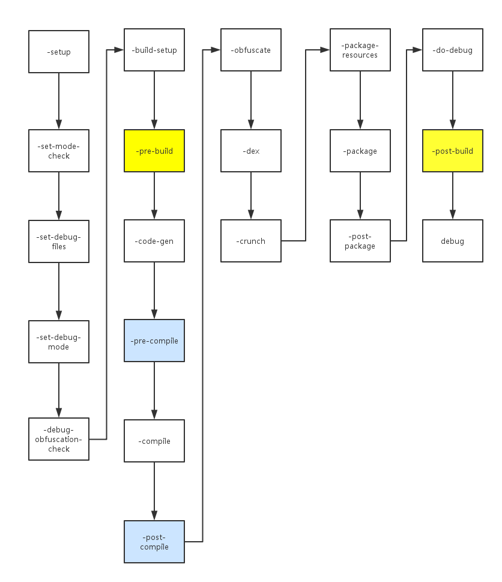

Ant debug过程分析
本文根据android sdk中的tools/ant/build.xml，对生成debug包的流程进行一次简单的描述。
1、总体流程

2、每个流程的任务
-setup
一些基本操作，
输出项目名
判断项目类型(library or test or other)
-set-mode-check
先判断是否已经设置了mode，因为接下来马上要设置mode为debug模式，如果之前已经设置了mode，则fail。
-set-debug-files
如果判断之前没有设置mode，则执行这一步
设置debug-unaligned.apk的路径(一般在out文件夹下)
设置debug.apk的路径(一般在out文件夹下)
-set-debug-mode
设置为debug模式
build.target = debug
设置build.is.instrumented
设置build.is.packaging.debug
设置renderscript.opt.level优化
-debug-obfuscation-check
在debug模式下不做混淆，将混淆关闭
proguard.enabled=false
-build-setup
设置android.build.tools.dir路径
从bin/build.prop文件中读取最近一次build的相关属性，将build.last.target，build.last.is.instrumented，build.last.is.packaging.debug，build.last.is.signing.debug置空
如果最近一次不是debug模式，则将之前编译好的class文件删除, 路径在bin/class文件夹下。因为在新的模式下javac在计算依赖时无法使用以前不同模式编译的class文件。
如果build.last.is.instrumented为true(现在是false)，一样要删除以前编译好的class文件。
否则，编译好的class文件可以保留。
gettarget获取相关target属性,
jarFile是sdk/platforms/android-19/android.jar
aidlFile是sdk/platforms/android-19/framework.aidl
targetApiOut从manifest.xml的targetSdkVersion获取
minSdkVersionOut从manifest.xml的minSdkVersion获取获取manifest中，application的hasCode是否true(默认true),false的情况下，不加载任何代码。
创建工程相关目录(已经创建则跳过)，包括
res文件夹
libs文件夹
bin文件夹
bin/res文件夹
bin/rsObj文件夹
bin/rsLibs文件夹
如果hasCode=true，再生成
gen文件夹
bin/classes文件夹
bin/dexedLibs文件夹如果有库文件，编译库文件
如果是一个test project，直接编译
-pre-build
一般在项目中override。
-code-gen
将多个模块的manifest合成一个。
如果hasCode=true，编译资源，aidl等：
编译aidl，输出到bin/aidl文件夹下
用renderscript编译resources，生成结果放在gen和bin/res, bin/rsLibs, bin/rsObj文件夹
用aapt对资源进行混淆(如果需要混淆)和打包处理BuildConfig类。
-pre-compile
一般在项目中override。
-compile
如果hasCode=false，则跳过这一步。
否则，先合并project, test project, java compiler的classpath
调用javac，将src和gen的内容编译输出到bin
如果是instrument项目，调用emma并输出到bin/classes文件夹
如果是一个library项目，生成bin/classes.jar
-post-compile
一般在项目中override。
-obfuscate
debug过程不进行混淆。
-dex
将class文件转化为dex文件(dalvik bytecode)。
只有在hasCode=true，且不是library project时，才会执行dex。
-crunch
更新png图片缓存，输出到bin/res文件夹下。
-package-resources
对资源进行打包，包括res和assets文件夹下的东西。
可以选择对资源进行压缩处理或者不压缩。
-package
只有在项目不是library project时，才会执行打包操作。
打包生成projectname-debug-unaligned.apk
-post-package
一般在项目中override。
-do-debug
根据projectname-debug-unaligned.apk，做对齐，生成最终的debug包：projectname-debug.apk
-post-build
一般在项目中override。